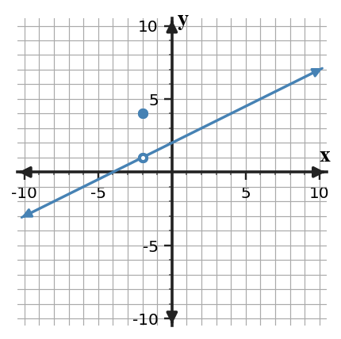
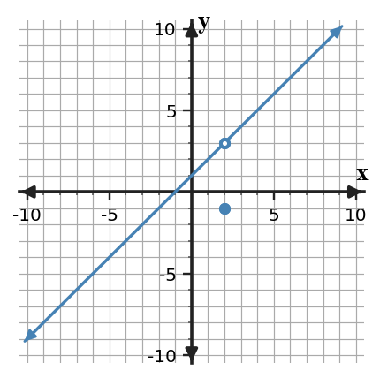

Mathematical idea: A limit records the value a function approaches, not necessarily the value assigned at the target input.
You will read limits from tables and graphs, distinguish limits from function values, and connect secant slopes to instantaneous rate of change.
Relate average versus instantaneous change to the idea of a limit and read and interpret limit notation.
I can statements
These are words and notation you will see in this section. Do not define them yet.
Use the preview activity to decide which terms you already know, recognize, or do not know yet. Watch for these terms in bold when they are first meaningfully introduced or defined in the reading.
Directions
Before reading closely, skim the vocabulary list and the section. Look at titles, headings, bold terms, equations, pictures, graphs, tables, diagrams, and other representations. Do not try to understand everything yet. Notice what already looks familiar and make predictions about what the section may explain.
Step 1 - Sort the vocabulary. Write each term in the column that best matches what you know right now. You may move a term later.
| Know for sure | Recognize | Don't know yet |
|---|---|---|
Step 2 - Skim the section. Record what catches your attention before you read closely.
| What I noticed | |
|---|---|
| What I predict | |
| What I wonder |
Directions
This is a long-range preview for future work. Do not solve it today. Read and annotate it. Mark what you already understand, what looks familiar, and what you think you will need to learn before you can complete the task.
A function and a set of secant slopes are sampled near the same input.
| $x$ | 1.9 | 1.99 | 1.999 | 2.001 | 2.01 | 2.1 |
|---|---|---|---|---|---|---|
| $f(x)$ | 3.7 | 3.97 | 3.997 | 4.003 | 4.03 | 4.3 |
| Secant interval width | 1 | 0.5 | 0.1 | 0.01 |
|---|---|---|---|---|
| Secant slope | 7.1 | 6.5 | 6.1 | 6.01 |
Directions
Read in manageable chunks. Annotate the prose and the representations together: underline key relationships, circle or highlight new vocabulary, label important features, connect a sentence to an equation, table, graph, model, or diagram, and write brief questions or connections in the margins.
The central idea of a limit is local behavior. Instead of asking only what a function equals at one input, calculus asks what the surrounding outputs are doing as inputs move closer and closer to a target. This shift from a single point to a neighborhood is what lets limits describe behavior even when a graph has a hole, a jump, or a separately defined point.
When a table is used to estimate a limit, the useful rows are the ones whose inputs are very close to the target. Values far away may show the general shape of a function, but they are weaker evidence about local behavior. A strong table usually samples from both sides and includes inputs that get progressively closer.
The phrase “approaches” matters. A function does not have to reach the limiting value at the target input, and the target input does not even have to belong to the domain. The notation $\lim_{x\to a}f(x)=L$ says that outputs can be made arbitrarily close to $L$ by choosing inputs sufficiently close to $a$, with the usual restriction that the inputs themselves are not required to equal $a$.
Graphs encode the same idea visually. Trace the curve toward the target from nearby x-values and watch the y-values. The point drawn exactly at the target can be useful information about the function, but it is not automatically evidence about the limit.
In this unit, numerical tables, graphs, and symbols are different ways of reporting the same local behavior. The goal is not to memorize isolated rules for each representation; it is to learn how to ask the same question in each one: what output value is the function settling toward as the input closes in on the target?
The statement $$\lim_{x\to a}f(x)=L$$ means that $f(x)$ approaches $L$ as $x$ approaches $a$ through nearby inputs. The statement does not, by itself, determine $f(a)$.
Stop and Discuss
Use the numerical evidence to analyze the limit near $x=-1$.
| $x$ | -1.5 | -1.1 | -1.01 | -0.99 | -0.9 | -0.5 |
|---|---|---|---|---|---|---|
| $h(x)$ | 6.5 | 6.1 | 6.01 | 6.01 | 6.1 | 6.5 |
Use the table to analyze the behavior of $g$ near $x=2$.
| $x$ | 1.5 | 1.9 | 1.99 | 2.01 | 2.1 | 2.5 |
|---|---|---|---|---|---|---|
| $g(x)$ | -2.5 | -2.9 | -2.99 | -3.01 | -3.1 | -3.5 |
The notation $f(a)$ and the notation $\lim_{x\to a}f(x)$ answer different questions. The first asks for the assigned output at one exact input. The second asks about nearby outputs. A graph can therefore show an open circle where the surrounding curve approaches one value and a filled point at the same x-coordinate showing a different function value.
This distinction is not a technical exception; it is a defining feature of limits. If the nearby behavior approaches 3 while the filled point is at -1, then the limit is 3 and the function value is -1. The graph is not contradictory because it is reporting two different pieces of information.

Graph read: Trace the line toward $x=-2$ from both sides. Compare the y-value being approached with the separate filled point at the target.
Tables can show the same separation. If rows near $x=0$ approach -4 but the function is defined separately so that $f(0)=9$, the table still supports a limit of -4. The isolated value 9 matters for continuity later, but it does not replace the nearby evidence.
A common error is to read a limit as “plug in the number.” Substitution becomes a powerful limit method later, but it works because many functions are continuous, not because a limit is defined as a function value. Keeping the concepts separate now makes the later shortcut meaningful rather than mysterious.
When you compare a graph and a table, look for agreement in the trend rather than exact equality in every sampled value. The values 2.9, 2.99, and 2.999 can all be evidence for approaching 3; approximation is part of the representation, not a defect.
$f(a)$ is the actual assigned output.
$\lim_{x\to a}f(x)$ describes the nearby trend.
Continuity later connects these two quantities, but they are not the same definition.
The graph of $f$ is shown.

A table of nearby values is shown, but the row at the target input is not included.
| $x$ | -0.1 | -0.01 | -0.001 | 0.001 | 0.01 | 0.1 |
|---|---|---|---|---|---|---|
| $p(x)$ | -4.2 | -4.02 | -4.002 | -3.998 | -3.98 | -3.8 |
An average rate of change measures change across an interval. For a function $f$, the average rate from $x=a$ to $x=b$ is $\frac{f(b)-f(a)}{b-a}$. On a graph, this is the slope of the secant line through the two points.
An instantaneous rate of change describes what is happening at one input. The difficulty is that slope normally requires two points. Calculus resolves that difficulty by using a limiting process: keep one point fixed and move the second point closer and closer.
If the second input is written as $a+h$, the secant slope becomes $\frac{f(a+h)-f(a)}{h}$. The parameter $h$ measures the horizontal separation of the two inputs. As $h$ approaches 0, the interval shrinks while the secant slopes may settle toward a stable value.
That stable value is the bridge from average change to instantaneous change. The secant slopes are still ordinary average rates for every nonzero $h$, but their limiting behavior captures what the function is doing at the fixed input. This is the same idea of “approach” that appears in numerical and graphical limits.
Not every list of secant slopes settles cleanly, just as not every function has a finite limit. When the slopes do settle, the pattern provides numerical evidence for an instantaneous rate. Later, this limiting process becomes the formal definition of the derivative.
For now, focus on interpreting the trend. A sequence of slopes such as 5.4, 5.88, 5.988 is stronger evidence for a value near 6 than the first slope alone because the later intervals are smaller.
Average rate from $a$ to $a+h$:
$$\frac{f(a+h)-f(a)}{h}$$As $h\to0$, the interval width shrinks. When the secant slopes approach one value, that limiting value represents instantaneous rate of change.
Stop and Discuss
Secant slopes are computed using one fixed endpoint at $x=-2$ and a second endpoint that moves closer to $-2$.
| Second endpoint | -1 | -1.5 | -1.9 | -1.99 |
|---|---|---|---|---|
| Secant slope | 4.8 | 5.4 | 5.88 | 5.988 |
A position function is sampled using secant intervals that begin at $t=3$ seconds.
| Interval | $[3,4]$ | $[3,3.5]$ | $[3,3.1]$ | $[3,3.01]$ |
|---|---|---|---|---|
| Average velocity (m/s) | 9.0 | 8.5 | 8.1 | 8.01 |
Read $\lim_{x\to a}f(x)=L$ as “the limit of $f(x)$ as $x$ approaches $a$ equals $L$.” Track three roles: input variable $x$, target input $a$, and approached output $L$.
Connect words, notation, and meaning.
Translate between limit notation and verbal meaning.
You have now seen these terms in the reading, representations, and practice. Use this table to consolidate what each term means in this course.
| Term / notation | Definition / meaning |
|---|---|
| limit | the value that a function approaches as the input approaches a specified value |
| average rate of change | the change in output divided by the change in input over an interval; geometrically, a secant slope |
| instantaneous rate of change | the limiting value of average rates of change as the interval shrinks to a point |
| limit notation | symbolic notation such as $\lim_{x\to a}f(x)=L$, meaning the values of $f(x)$ approach $L$ as $x$ approaches $a$ |
| Mistake | Why it is tempting | Check instead |
|---|---|---|
| Treating the function value at a point as automatically equal to the limit. | Point values are familiar from earlier algebra. | Check the limit conditions separately from the assigned value. |
| Reading a limit as a value reached rather than a value approached. | The shortcut seems plausible from one representation. | Return to the precise definition or condition that controls the conclusion. |
| Confusing average rate of change with instantaneous rate of change. | The shortcut seems plausible from one representation. | Return to the precise definition or condition that controls the conclusion. |
| Assuming the limit must equal the point value. | Students are used to evaluating functions by substitution. | Read nearby behavior first; treat $f(a)$ as separate information. |
| Treating the first secant slope as instantaneous. | The first interval may already look small. | Compare a sequence of shrinking intervals and look for a stable trend. |